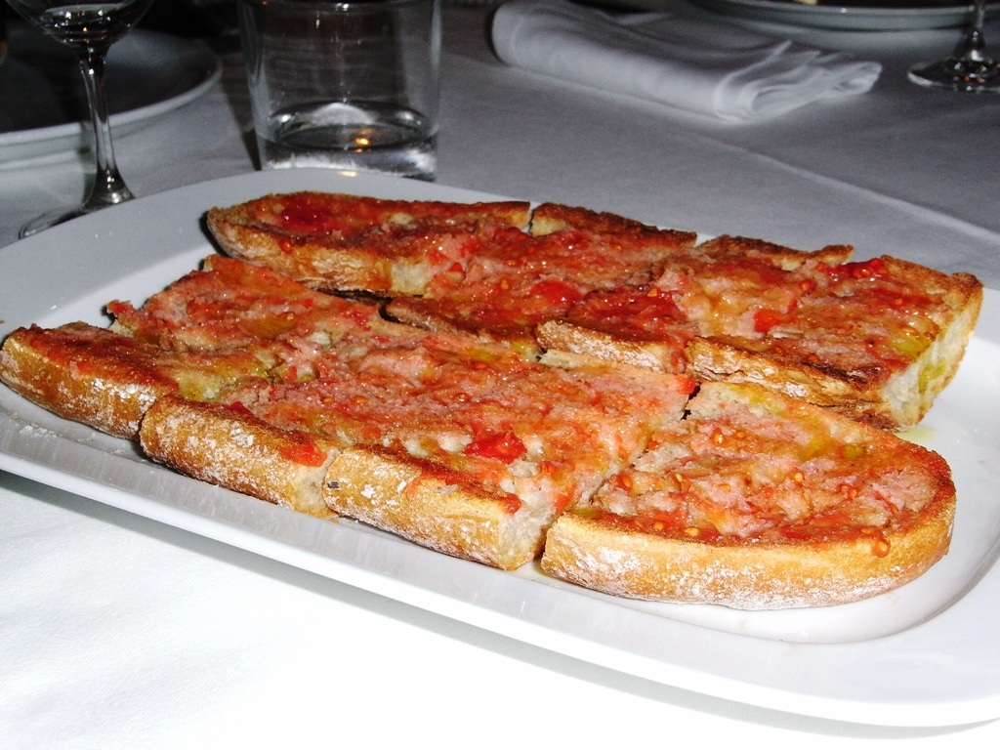
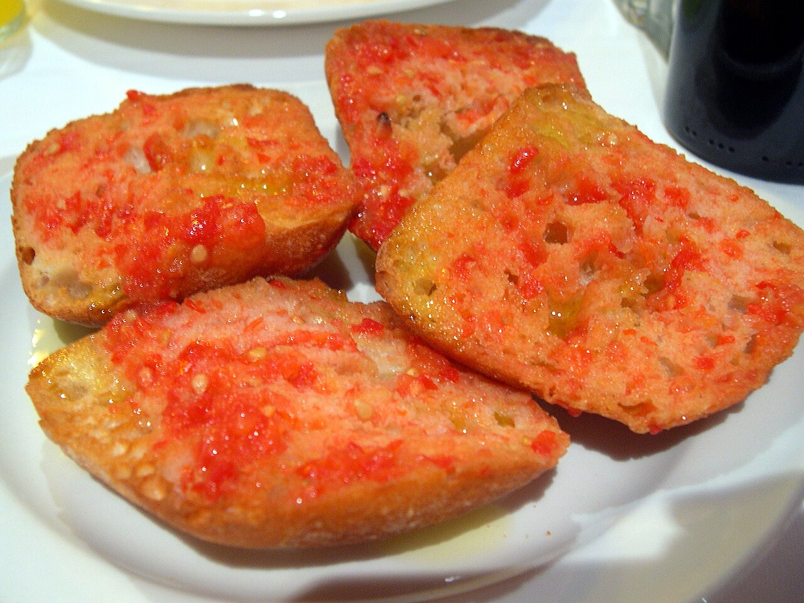

Pa amb tomàquet

El pa amb tomàquet és un dels pilars de la cuina catalana, una recepta tan senzilla com deliciosa. La clau està en utilitzar un bon pa rústic —preferiblement torrat— i un tomàquet ben madur, sucós i aromàtic. Quan aquests ingredients es combinen amb un raig generós d’oli d’oliva verge extra, el resultat és un mos ple de sabor mediterrani.
Per preparar-lo, talla el pa a llesques gruixudes i torra’l lleugerament perquè quedi cruixent per fora i tendre per dins. Frega-hi el tomàquet fins que la polpa quedi ben repartida, afegeix un pessic de sal i acaba-ho amb oli d’oliva de qualitat. Si vols potenciar el gust, pots fregar primer un gra d’all tallat per la meitat: donarà un toc intens però equilibrat.
El pa amb tomàquet és perfecte com a acompanyament, però també pot convertir-se en un plat complet si hi afegeixes pernil ibèric, formatges curats, anxoves o truita. És ideal per esmorzars, vermuts o sopars informals, i sempre triomfa en trobades familiars. La seva senzillesa permet adaptar-lo a qualsevol ocasió sense perdre l’essència tradicional.

